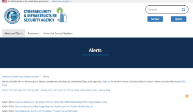
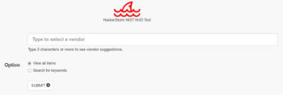

Vulnerability assessment
In this phase we have to do a
list of possible
vulnerabilities present on the hosts in scope
A penetration tester has to do a
vulnerability assessment on each service found
Is possible to do
vulnerability assessment:
•
Automated Scanners that send queries to a host to find well-known
vulnerabilities, is important to configure it in order to use the data collected in the previous steps. When the
scan is complete we will have a report that we can use in the next exploitation phase
◇
Nessus ◇ OpenVAS
◇ Nexpose
◇ GFI LAN Guard.
•
Manual
Testing when automated scanners are not enough we have to use data collected in the previous step.
Testing a custom application is very similar to testing a web application that means:
◇ Learning and
understanding its features
◇ Understanding how it exchanges data over the network
◇ Understanding how it
accesses resources like databases, servers, local and remote files and so on
◇ Reverse engineering its
logic
•
both(manually and with automated scanner)
Information Gathering and
Scanning phases are needed to
“widening the attack
surface”,
hackers use these two phases also to launch targeted attacks that do not trigger alarms
in the victim's defense system
When a Client ask
only for
a Vulnerability Assessment
Vulnerability Assessment is
simply a scan of the
vulnerabilities found on networks and applications. There is NOT exploitation phase
PRO: • faster and lighter on
the infrastructure
CONS:• is
more in shallower, both in terms of
vulnerabilities tested and vulnerabilities discovered(because of the absence of the cyclic process)
◇ we
don't proceed with the exploitation phase, so we
can not confirm the
vulnerabilities by testing them and giving proof of their existence
◇ we can't cycle after the
exploitation phase, and so we
can not discover others vulnerabilities
increasing privileges on the target hosts and/or network
Vulnerability Research Sources
These sites publish information about vulnerabilities discovered in System or Services.
Even
though an exploit might not be available, the tester still needs to understand the vulnerabilities so that they can
be included in the test report
• The
National Cyber Awareness
System, maintained by the US Department of Homeland Security Cybersecurity and Infrastructure Security Agency
(CISA)
• The
Common Vulnerabilities and Exposures (CVE) repository
operated by Mitre
• The
HackerStorm website, which includes a free, downloadable Open
Source Vulnerability Database tool that can be stored locally by a tester for searching even without internet
access

.png){kind=link}